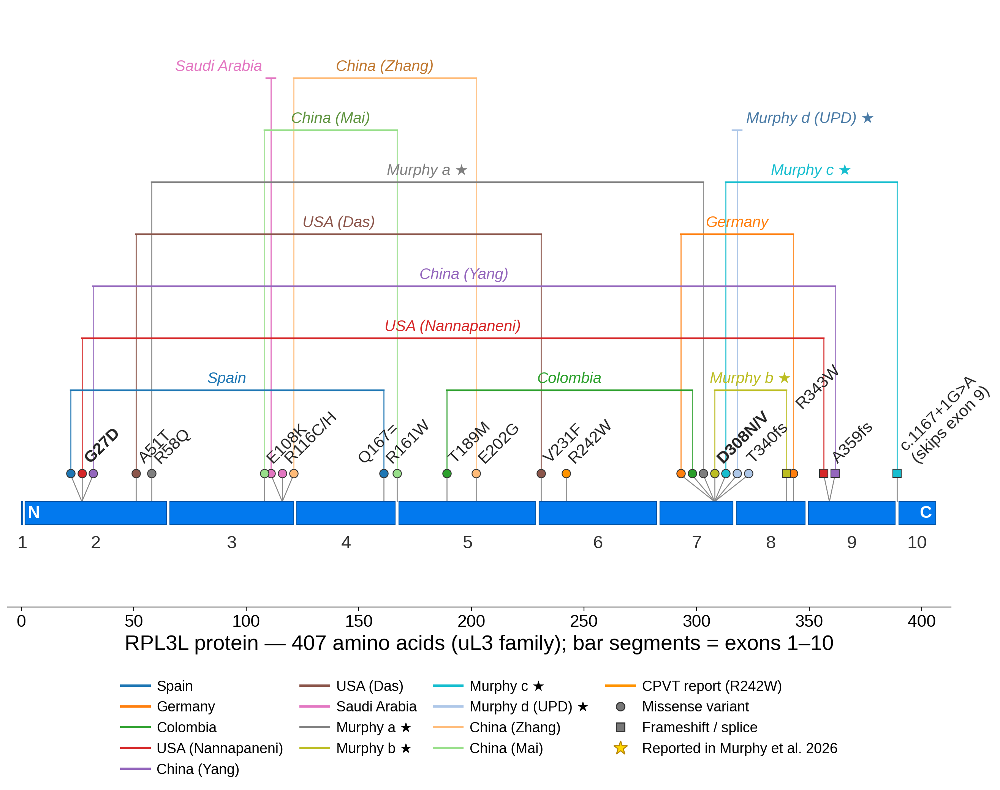

RPL3L & CMD2D: a scientific overview
RPL3L (OMIM 617416; 16p13.3; NM_005061; 10 exons) encodes 60S ribosomal protein L3-like (UniProt Q92901, 407 aa), a striated-muscle-specific paralog of RPL3 that replaces RPL3 in the large ribosomal subunit of cardiomyocytes and skeletal muscle. Biallelic pathogenic variants cause CMD2D (OMIM 619371), an autosomal recessive neonatal dilated cardiomyopathy with rapid progression to heart failure. RPL3L was the first cytoplasmic ribosomal protein implicated in a non-syndromic cardiomyopathy.
Variant spectrum
A thorough review of the literature (through 2026) identifies 14 disease alleles across 11 confirmed families (Murphy et al., 2026), plus additional case reports (Zhang et al., 2026; Mai et al., 2026). Ten alleles are missense — including two recurrent hotspots, Gly27Asp and Asp308Asn/Val, which together account for 9 of 11 (82%) of confirmed families — plus three truncating frameshifts and one splice-donor variant. Nine of the eleven families are compound heterozygous, each pairing one hotspot allele with a second, family-specific allele; the two exceptions are homozygous (p.Arg116His in a consanguineous family; p.Asp308Val via segmental uniparental disomy). Additional case reports describe pairs of non-hotspot missense variants (Das 2022; Zhang 2026). Heterozygous carriers are unaffected.

| Variant | Class | Families / patients | Outcome | Reference |
|---|---|---|---|---|
c.80G>A; p.Gly27Asp (G27D) |
Missense — hotspot | 3 families: Spain (2 sibs), USA (2 sibs), China | Girl transplanted at 5 mo, alive at 10 y; her brother died in the 1st month of life; 2 US brothers died at 124 and 68 days; 1 stable on medication | Ganapathi 2020; Nannapaneni 2022; Yang 2023 |
c.923A>T; p.Asp308Val (D308V) |
Missense — hotspot | Germany (2 sibs); plus one homozygous case (segmental uniparental disomy) | Deaths in 1st month of life | Ganapathi 2020; Murphy 2026 |
c.922G>A; p.Asp308Asn (D308N) |
Missense — hotspot | Colombia, with T189M | Boy transplanted at 5 mo, alive at 9 y; sister died at 2 months | Ganapathi 2020; Murphy 2026 |
c.1027C>T; p.Arg343Trp (R343W) |
Missense (non-hotspot) | Germany, with D308V | 2 deaths (21st and 15th DOL) | Ganapathi 2020 |
c.566C>T; p.Thr189Met (T189M) |
Missense (non-hotspot) | Colombia, with D308N | Boy transplanted at 5 mo, alive at 9 y; sister died at 2 months | Ganapathi 2020; Murphy 2026 |
c.481C>T; p.Arg161Trp (R161W) |
Missense (non-hotspot) | Spain, with G27D | Girl transplanted, alive at 10 y; brother died in the 1st month of life | Ganapathi 2020 |
c.347G>A; p.Arg116His (R116H) |
Missense | Saudi Arabia — homozygous, consanguineous parents | Died at 16 months | Al-Hassnan 2020 (OMIM .0007) |
c.1076_1080delCCGTG; p.Ala359Glyfs*4 |
Frameshift (LOF) | USA, 2 brothers, with G27D | Deaths at 124 and 68 DOL | Nannapaneni 2022 |
c.1074dupA; p.Ala359fs*6 |
Frameshift (LOF) | China, with G27D | Stable on medication at 5 months | Yang 2023 |
c.151G>A; p.Ala51Thr + c.691G>T; p.Val231Phe |
Missense (non-hotspot pair) | USA | Berlin Heart LVAD bridge to transplant; well post-transplant | Das 2022 |
p.Arg58Gln (R58Q) |
Missense (previously unreported) | Murphy 2026 | — | Murphy 2026 |
p.Thr340Asnfs*25 (T340Nfs*25) |
Frameshift (LOF; previously unreported) | Murphy 2026 | — | Murphy 2026 |
c.346C>T; p.Arg116Cys + c.605A>G; p.Glu202Gly |
Missense pair | Infant with fulminant DCM; histopathology showed cardiomyocyte death, collagen deposition, mitochondrial disruption, sarcomere disarray | — | Zhang 2026 |
c.322G>A; p.Glu108Lys + c.501G>A; p.Gln167= (synonymous) |
Missense VUS + synonymous VUS | China (Hainan); sibling died of fulminant cardiomyopathy | Normal cardiac function at 6 months on medication | Mai 2026 |
c.1167+1G>A |
Splice donor (exon 9 skipping) | Not observed homozygous in CMD2D; see population context below | — | Thorolfsdottir 2018; Murphy 2026 |
c.724C>T; p.Arg242Trp |
Missense | Child with catecholaminergic polymorphic ventricular tachycardia (with an AGRN variant; digenic candidacy) | — | Jaouadi 2022 |
Note: this table is a literature summary maintained in good faith; verify against OMIM 617416 and ClinVar before clinical use. Contact us to report new alleles — we maintain a community variant log.
Population context: human "knockouts" are healthy
Large-scale sequencing (gnomAD, All of Us, UK Biobank) has identified putative human RPL3L knockouts
without severe cardiac disease — including one individual homozygous for a premature stop codon
(p.Arg226Ter) truncating nearly half the protein, and 17 individuals homozygous for the
c.1167+1G>A splice-donor variant. The common missense SNP p.Pro291Leu (allele frequency
4.26% in TOPMed) is homozygous in at least 715 living individuals and predicted benign. Together with
mild Rpl3l-knockout mice, this strongly indicates that CMD2D is not simple RPL3L deficiency —
hotspot variants are toxic beyond loss of function (Murphy 2026).
Mechanism: why hotspots are worse than knockouts
The central puzzle: human biallelic RPL3L disease is catastrophic, yet Rpl3l-knockout mice from several laboratories show no overt cardiac phenotype or only mild dysfunction — consistently accompanied by upregulation of the ubiquitous paralog RPL3. Murphy et al. (2026) resolved this with a dual-mechanism model built from human genetics, patient tissues, and isogenic cell models:
- Non-hotspot variants phenocopy knockout: RPL3L function is lost, but RPL3 compensation is permitted.
- Hotspot variants (e.g., p.Gly27Asp) combine:
- Loss of function — nucleolar protein aggregation and disrupted rRNA processing, blocking ribosome biogenesis; and
- Gain of function — preservation of RPL3L's role in repressing RPL3 mRNA via unproductive splicing, blocking the compensatory RPL3 upregulation.
Therapeutic implication
The model nominates relief of RPL3 repression (or pharmacologic RPL3 upregulation) as a rational therapeutic strategy for CMD2D — a hypothesis that is, in principle, testable in isogenic cell models and amenable to small-molecule or genetic approaches.
Open questions — where new work is needed
- Translational specialization: Which mRNAs are preferentially translated by RPL3L- versus RPL3-ribosomes in the neonatal heart? Ribosome profiling in human iPSC-cardiomyocytes is unreported.
- Species differences: Why is RPL3 compensation sufficient in mice but not in humans carrying hotspot alleles? Is unproductive splicing of RPL3 conserved?
- Genotype–phenotype: Only ~11–13 families are known; systematic correlation of allelic class (hotspot vs. LOF) with severity, arrhythmia, and outcome requires a registry.
- Adult phenotypes: Mechanistic basis of the atrial-fibrillation association (prolonged P-wave duration, altered neoatrial conduction have been proposed) and the CPVT report.
- Therapeutics: Can RPL3 compensation be induced safely? Are antisense or small-molecule approaches to restore productive RPL3 splicing feasible?
Primary literature
- Ganapathi M, Argyriou L, Martínez-Azorín F, et al. Bi-allelic missense disease-causing variants in RPL3L associate neonatal dilated cardiomyopathy with muscle-specific ribosome biogenesis. Hum Genet 139:1443–1454 (2020). doi:10.1007/s00439-020-02188-6
- Murphy MR, Ganapathi M, Rotlevi ER, et al. Pathogenetic mechanisms of muscle-specific ribosomes in dilated cardiomyopathy. Nat Cardiovasc Res (2026). doi:10.1038/s44161-025-00761-8
- Yang Q, Zhang Q, Qin Z, et al. Novel compound heterozygous variants in the RPL3L gene causing dilated cardiomyopathy type-2D: a case report and literature review. BMC Med Genomics (2023). doi:10.1186/s12920-023-01567-y
- Nannapaneni H, Ghaleb S, Arya S, et al. Further evidence of autosomal recessive inheritance of RPL3L pathogenic variants with rapidly progressive neonatal dilated cardiomyopathy. J Cardiovasc Dev Dis 9(3):65 (2022). doi:10.3390/jcdd9030065
- Das BB, Gajula V, Arya S, Taylor MB. Compound heterozygous missense variants in RPL3L genes associated with severe forms of dilated cardiomyopathy: a case report and literature review. Children 9(10):1495 (2022). doi:10.3390/children9101495
- Thorolfsdottir RB, Sveinbjornsson G, Sulem P, et al. Coding variants in RPL3L and MYZAP increase risk of atrial fibrillation. Commun Biol 1:68 (2018). doi:10.1038/s42003-018-0068-9
- Jaouadi H, Chabrak S, Lahbib S, Abdelhak S, Zaffran S. Identification of two variants in AGRN and RPL3L genes in a patient with catecholaminergic polymorphic ventricular tachycardia. Clin Case Rep 10(2):e05339 (2022). doi:10.1002/ccr3.5339
- Al-Hassnan ZN, et al. (2020) — homozygous p.Arg116His, as annotated in OMIM 617416 (.0007). doi:10.1161/CIRCGEN.120.002969 omim.org/entry/617416
- Zhang X, Wen T, Chen H, et al. Novel compound heterozygous missense variants in RPL3L gene associated with neonatal dilated cardiomyopathy. Am J Med Genet A (2026). doi:10.1002/ajmg.a.64225; PMID 40820268
- Mai B, Lei Z, Qin S, Yang G, Zhu N, Lin W. Infantile dilated cardiomyopathy caused by RPL3L gene mutation: a case report. J Int Med Res (2026). doi:10.1177/03000605261447152
- OMIM #619371 — Cardiomyopathy, dilated, 2D; OMIM 617416 — RPL3L. omim.org/entry/619371
- UniProtKB Q92901 (RL3L_HUMAN). www.uniprot.org/uniprotkb/Q92901
Collaborate with us
The initiative's scientific priorities are: (1) a consented international patient registry with natural-history data; (2) functional characterization of every reported allele in isogenic systems; (3) development of a CMD2D-relevant animal or tissue-engineered model; and (4) a therapeutic screen targeting the RPL3 compensation pathway. If you work on ribosome specialization, ribosomopathies, or neonatal cardiomyopathy, we want to talk.